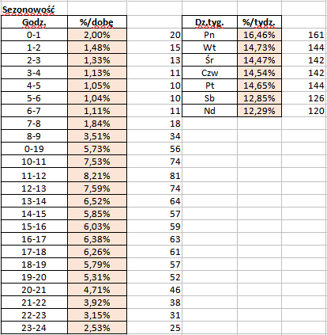

<div style="margin: 10px;">
    <div>
        <br>
        <div style="display: flex; gap: 10px">
            <h3>Sygnalizowanie anomalii względem realizacji planu</h3>
            <div
                title="Demonstrator technologii algorytmu wczesnego sygnalizowania anomalii względem realizacji zaplanowanego planu">
                <mat-icon style="margin-top: 25px;">info</mat-icon>
            </div>
        </div>
        <br>
        <div>
            <div *ngIf="krok == 1">
                <form [formGroup]="formularz" (ngSubmit)="onSubmit()">
                    <div style="display: flex; gap: 10px;">
                        <div>
                            <div style="line-height: 35px; margin-bottom: 20px;">Podaj libczę pacjentów</div>
                            <div style="line-height: 35px; margin-bottom: 20px;">Podaj libczę pacjentów
                                czerwonych </div>
                            <div style="line-height: 35px; margin-bottom: 20px;">Wskaż datę</div>
                            <div style="line-height: 35px;">Wskaż godzinę</div>
                        </div>
                        <div>

                            <div style="margin-bottom: 20px;">
                                <input type="number" formControlName="liczbaPacjentow" required
                                    class="form-control form-control-sm" style="width: 120px;" id="liczbaPacjentow"
                                    [(ngModel)]="liczbaPacjentow" name="liczbaPacjentow"
                                    [ngClass]="{ 'is-invalid': submitted && form_liczbaPacjentow.errors }"
                                    title="This is the text of the tooltip">
                            </div>


                            <div style="margin-bottom: 20px;">
                                <input type="number" formControlName="liczbaPacjentowCzerwonych" required
                                    class="form-control form-control-sm" style="width: 120px;"
                                    id="liczbaPacjentowCzerwonych" [(ngModel)]="liczbaPacjentowCzerwonych"
                                    [ngClass]="{ 'is-invalid': submitted && form_liczbaPacjentowCzerwonych.errors }"
                                    name="liczbaPacjentowCzerwonych" title="This is the text of the tooltip">
                            </div>
                            <div  style="margin-bottom: 20px;">
                                <input type="date" class="form-control form-control-sm" formControlName="wybranaData"
                                    required style="width: 120px;" id="wybranaData" [(ngModel)]="wybranaData"
                                    [ngClass]="{ 'is-invalid': submitted && form_wybranaData.errors }"
                                    name="wybranaData" title="This is the text of the tooltip">
                            </div>

                            <div>
                                <input type="time" class="form-control form-control-sm" formControlName="wybranaGodzina"
                                    required style="width: 120px;" id="wybranaGodzina" [(ngModel)]="wybranaGodzina"
                                    [ngClass]="{ 'is-invalid': submitted && form_wybranaGodzina.errors }"
                                    name="wybranaGodzina" title="This is the text of the tooltip">
                            </div>

                        </div>

                        <div>
                            <div style="margin-top: 10px; margin-bottom: 30px;"
                                *ngIf="submitted && form_liczbaPacjentow.errors?.['required']; else second">
                                Pole jest wymagane
                            </div>
                            <ng-template #second>
                                <div style="margin-top: 10px; margin-bottom: 30px;">
                                    &nbsp;
                                </div>
                            </ng-template>
                            <div style="margin-top: 10px; margin-bottom: 35px;"
                                *ngIf="submitted && form_liczbaPacjentowCzerwonych.errors?.['required']; else third">
                                Pole jest wymagane
                            </div>
                            <ng-template style="margin-top: 10px; margin-bottom: 30px;" #third>
                                <div style="margin-top: 10px; margin-bottom: 30px;">
                                    &nbsp;
                                </div>
                            </ng-template>
                            <div style="margin-top: 10px;  margin-bottom: 30px;"
                                *ngIf="submitted && form_wybranaData.errors?.['required']; else forth">
                                Pole jest wymagane
                            </div>
                            <ng-template style="margin-top: 10px; margin-bottom: 30px;" #forth>
                                <div style="margin-top: 10px; margin-bottom: 30px;">
                                    &nbsp;
                                </div>
                            </ng-template>
                            <div style="margin-top: 10px;"
                                *ngIf="submitted && form_wybranaGodzina.errors?.['required']; else fifth">
                                Pole jest wymagane
                            </div>
                            <ng-template style="margin-top: 10px; margin-bottom: 30px;" #fifth>
                                <div style="margin-top: 10px; margin-bottom: 30px;">
                                    &nbsp;
                                </div>
                            </ng-template>
                        </div>

                    </div>
                    <button mat-raised-button style="margin: 20px; margin-left: 210px;" color="primary" type="submit"
                        class="btn btn-primary">Zatwierdź
                        plan</button>
                </form>
            </div>

            <div *ngIf="krok == 2">
                <button mat-raised-button color="primary" style="margin-bottom: 20px;" (click)="setKrok(1)">Wstecz</button>
                <br>
                <div style="display: flex; gap: 50px;">
                    <div style="max-width: 400px;">
                        <div> Data:  <span class="box2" style="color: green;">{{this.wybranaData}}</span> Godzina: <span class="box2" style="color: green;"> {{this.wybranaGodzina}}</span></div>
                        <div><br></div>
                        <div *ngIf="liczbaPacjentow / zalozenia_liczba_pacjentow * 100 <= 100; else second3"> Pacjenci przyjęci stanowią <span class="box2" style="color: green;">{{liczbaPacjentow / zalozenia_liczba_pacjentow * 100 | number : '1.0-2'}}%</span> % planu</div>
                        <ng-template #second3>
                            <div> Pacjenci przyjęci stanowią <span class="box2" style="color: red;">{{liczbaPacjentow / zalozenia_liczba_pacjentow * 100 | number : '1.0-2'}}%</span> % planu</div>
                        </ng-template>
                        <div><br></div>
                        <div class="box2" style="color: green;" *ngIf="zalozenia_liczba_pacjentow > liczbaPacjentow; else second">Liczba pacjentów przyjętych nie przekroczyła liczby ustalonej w założeniach.</div>
                        <ng-template #second>
                            <div class="box2" *ngIf="liczbaPacjentow > zalozenia_liczba_pacjentow; else thrid">Liczba pacjentów przyjętych przekroczyła liczbę ustaloną w założeniach. <span  style="color: red;" >Niezbędne jest zaangażowanie dodatkowych zasobów.</span></div>
                        </ng-template>
                        <ng-template #thrid>
                            <div class="box2"  style="color: yellow;" *ngIf="liczbaPacjentow == zalozenia_liczba_pacjentow">Liczba pacjentów przyjętych jest zgodna z liczbą ustaloną w założeniach.</div>
                        </ng-template>
                        <div><br></div>
                    </div>
                    <div>
                        <div> Rozkład godzinowy obsługi pacjentów</div>
                        <div><br></div>
                        
                    </div>
                </div>
            </div>
            <div *ngIf="krok == 3">
                <div style="margin: 10px;">
                    <div> Pacjenci przyjęci w ciągu tego dnia:</div>
                    <div class="box2" style="color: blueviolet; width: 300px;"> 70% przewidywanej dziennej liczby
                        pacjentów</div>
                </div>
                <div style="margin: 10px;">
                    <div> Przewidywany termin przekroczenia planowanej tygodniowej liczby pacjentów:</div>
                    <div class="box2" style="color: blueviolet; width: 300px;"> godzina 17:00</div>
                </div>

                <div class="box2" style="margin-left: 10px; margin-top: 50px; color: green; width: 150px;">
                    <div> {{cDay() }}</div>
                    <div> {{cDate() }}</div>
                    <div> {{cHour() }}</div>
                </div>
            </div>
        </div>
        <br>
        <br>
        <br>
        <br>
        <br>
    </div>
</div>